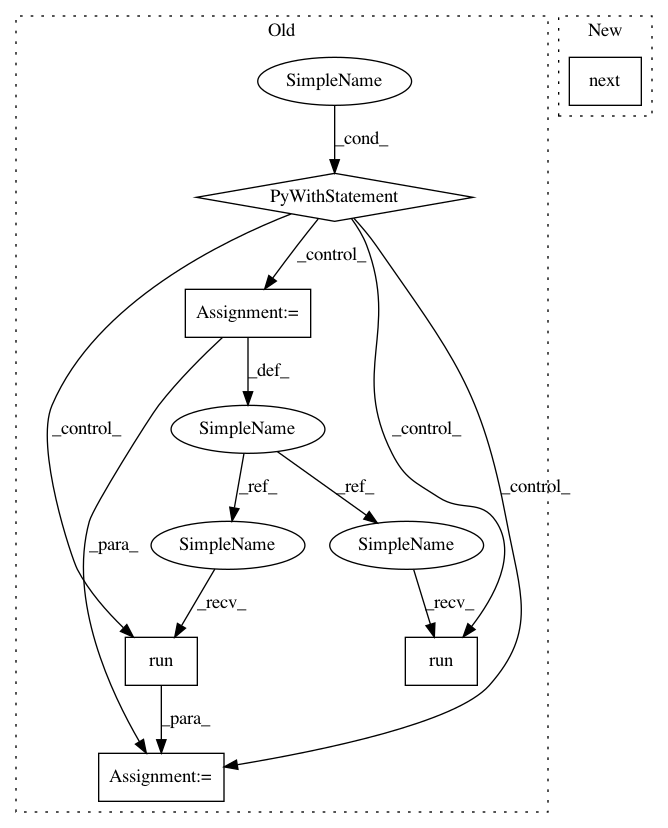

71753922bd63dfa73e3b10c572f73e268b406ae6,opennmt/tests/model_test.py,ModelTest,testSequenceToSequenceWithGuidedAlignment,#ModelTest#Any#,167
Before Change
outputs, _ = model(features, labels=labels, training=True)
loss = model.compute_loss(outputs, labels, training=True)
loss = loss[0] / loss[1]
with self.session() as sess:
sess.run(tf.compat.v1.global_variables_initializer())
sess.run(tf.compat.v1.local_variables_initializer())
sess.run(tf.compat.v1.tables_initializer())
sess.run(iterator.initializer)
loss = sess.run(loss)
self.assertIsInstance(loss, Number)
def testSequenceToSequenceWithReplaceUnknownTarget(self):
model, params = _seq2seq_model()
params["replace_unknown_target"] = True
features_file, labels_file, data_config = self._makeToyEnDeData()
After Change
features_file, labels_file, data_config = self._makeToyEnDeData(with_alignments=True)
model.initialize(data_config, params=params)
dataset = model.examples_inputter.make_training_dataset(features_file, labels_file, 16)
features, labels = next(iter(dataset))
self.assertIn("alignment", labels)
outputs, _ = model(features, labels=labels, training=True)
loss = model.compute_loss(outputs, labels, training=True)
loss = loss[0] / loss[1]
In pattern: SUPERPATTERN
Frequency: 3
Non-data size: 6
Instances
Project Name: OpenNMT/OpenNMT-tf
Commit Name: 71753922bd63dfa73e3b10c572f73e268b406ae6
Time: 2019-07-05
Author: guillaume.klein@systrangroup.com
File Name: opennmt/tests/model_test.py
Class Name: ModelTest
Method Name: testSequenceToSequenceWithGuidedAlignment
Project Name: OpenNMT/OpenNMT-tf
Commit Name: 71753922bd63dfa73e3b10c572f73e268b406ae6
Time: 2019-07-05
Author: guillaume.klein@systrangroup.com
File Name: opennmt/tests/model_test.py
Class Name: ModelTest
Method Name: testSequenceToSequenceWithReplaceUnknownTarget
Project Name: OpenNMT/OpenNMT-tf
Commit Name: 71753922bd63dfa73e3b10c572f73e268b406ae6
Time: 2019-07-05
Author: guillaume.klein@systrangroup.com
File Name: opennmt/tests/model_test.py
Class Name: ModelTest
Method Name: testSequenceToSequenceWithGuidedAlignment
Project Name: OpenNMT/OpenNMT-tf
Commit Name: f210f5a82b4258925d298b5896d5157cdde333c2
Time: 2019-02-11
Author: guillaume.klein@systrangroup.com
File Name: opennmt/tests/data_test.py
Class Name: DataTest
Method Name: testIrregularBatches